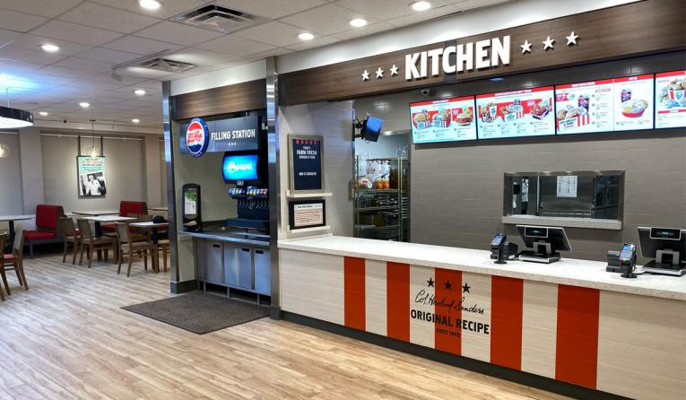
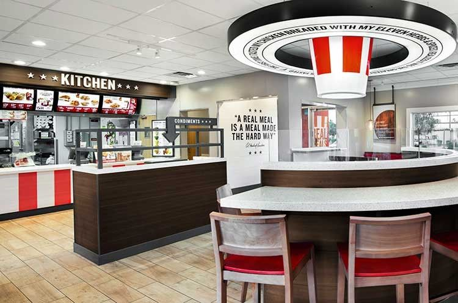

KFC
"KFC fried chicken tastes good because it is formulated to taste good. Sure, they brag about their 11 herbs and spices, which is great, but that's not what you are tasting when you bite into some extra tasty crispy," Bayer explained.The human mouth craves those flavors and that is what makes you go back for more KFC."
